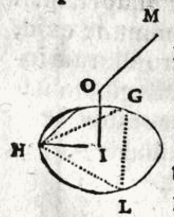

Chapter XIII: On Computing the Orbs Inscribed in and Circumscribed about the Bodies¶
Hitherto nothing has been said except certain agreeing signs and plausible indications (eikota) of our proposed Theorem. Let us now pass to the astronomical distances (apostemata) of the orbs and geometrical demonstrations: unless these agree, we shall undoubtedly have wasted all our preceding labor. First of all, let us see in what proportion the orbs inscribed in each of these five regular bodies stand to those circumscribed about them.
Now the radii or semidiameters of the circumscribed orbs equal the semi-diagonals of the bodies. For unless all the angles of a figure touch the same surface, the body will not be regular. Moreover, each pair of mutually opposite angles and the center of the figure always lie on the same straight line or axis of the orb. The Tetrahedron alone is excepted, which has its several vertices opposite the several centers of its faces.
Furthermore, the straight line joining the centers of the figure and of a face is the radius or semidiameter of the inscribed orb, by the last proposition of Book XV of Campanus on Euclid. For the inscribed orb must touch all the face-centers of the figure; and all inscribed figures share the very same center with the circumscribed ones.
Since this is so, it is easy to see that the square of the radius by which a circle is circumscribed about a face must be subtracted from the square of the radius of the circumscribed orb, so that the remainder may be the square of the sought line—that is, of the radius of the inscribed orb. In the adjoining diagram, HOM is the axis of the circumscribed orb, whose common center with the inscribed figure is at O; HGL is one plane of the figure, here taken as the base; I is the center of the base; and HI is the radius of the circle circumscribed about the base. And a straight line let down from the center O of the orb to I, the center of the smaller circle, will be perpendicular to that circle and to the line HI. In the triangle HIO, therefore, the angle at I is right. Hence the square on HO equals the squares on HI and OI. And when the square on HI is subtracted from the square on HO, it leaves the sought square on OI, by I.47 ([I.47]).


Hence it appears that, in order to obtain IO in all the figures, we must first seek HI, the radius of the base. But the radius HI is obtained once we know the side of the figure around whose base it circumscribes a circle. Hence again, in order to obtain the radius of the base, we must first seek the side of each figure.
Taking, then, the radius of any circumscribed orb as the quantity of the sinus totus, 1000 parts (this magnitude of the radius suffices for our purpose), the square of the side of the Cube, by Proposition 15 of Book XIII of Euclid’s Elements, is one third of the square of the axis—so that if the axis has 2000 parts, the side of the Cube has 1155. The square of the side of the Octahedron, by Proposition 14 of the same book, is half the square of the axis. The square of the side of the Tetrahedron, by Proposition 13 of the same book, is one and a half times (sesquialtera) the square of the axis. And up to this point, that golden theorem of Pythagoras on the squares of the sides in a right-angled triangle, Proposition 47 of Book I ([I.47]), has been of service. In the remaining two bodies, we need that other treasure of Geometry—the line cut according to extreme and mean ratio (sectio divina), which is Proposition 30 of Book VI ([VI.30]). For the side of the Dodecahedron is the greater segment of the side of the Cube cut according to extreme and mean ratio, by the Corollary to XIII.17. Likewise, to find the side of the Icosahedron, we first seek the radius of that circle which touches five angles of the Icosahedron, which is AC in circle AB. Its square is one fifth of the square of the axis, by the Corollary to XIII.16. Therefore, by XIII.5 and XIII.9, the greater segment AD of this radius AC cut in extreme and mean ratio is the side of the decagon that can be inscribed in the same circle AB.
Therefore, the squares of the whole radius AC and of this greater segment AD, added together, make the square of the pentagonal side EF in that circle, by XIII.10. And since this lies between two angles of the Icosahedron, it will certainly be the side of the Icosahedron, by XIII.11 and XIII.16.
We have the sides of all the figures in proportion to the axis of the circumscribed orb. It follows that we investigate the radii of the circles circumscribed about the bases from the now known sides—which anyone will most easily accomplish with the help of a table of sines, if he considers that ultra-refined numbers are not needed here. Yet if anyone prefers to work more artfully, I shall set down for him the foundations of the matter from Euclid. Since, then, there are at most three shapes of bases—triangular, quadrangular, and pentagonal—in the triangular ones, the side GH has a square equal to three times
the square of the sought radius HI, by XIII.12, often cited. In a square, the side GH has a square equal to twice that of the sought radius. Finally, in a pentagon, the combined squares of the side GH and of the chord KH subtending two sides (being given lines) equal five times the square of the sought radius HI, by XIV.4 according to Campanus. Thus we have the radii of the circles in the bases in the same proportion as the sides.
Subtracting, then, the squares of these radii from the square of the sinus totus, which is the measure of the semidiameter or radius in the circumscribed orb, there will remain, as was proved above, the squares of the radii we seek—namely, of the inscribed orbs. Yet, as I have said, you will use sines more conveniently and easily.
Nor, however, should certain other shortcuts be passed over here, lest we labor too painfully. First, the orbs inscribed in the Dodecahedron and Icosahedron are of the same amplitude if the figures are inscribed in the same orb; for the bases of both figures have the same radius, by XIV.2. Let the same judgment hold for the Cube and Octahedron. For the axis has a square equal to three times that of the cubic side, and this twice that of the base radius; therefore the axis has a square equal to six times that of the base radius. In the Octahedron, conversely, the axis has a square equal to twice that of the side, and this three times that of the base radius; therefore here too the axis has a square equal to six times that of the radius. Since, then, by hypothesis the radius of the circumscribed orbs—namely HM (in the first diagram of this chapter)—is the same, and the radius of the bases HI is also the same, while the angle at I (in triangle HIO) is always right, the radius of the inscribed orbs—namely the third side OI—will also be the same, by the converse of I.26. Wherefore, once we have the inscribed orbs of the Cube and Icosahedron, there is no need to inquire concerning the Octahedron and Dodecahedron.
Secondly, in the Cube, since the side itself is the altitude of the figure, half the side will be half the altitude—namely, the line connecting the centers of the figure and of the base. There is therefore no need to search for the radius in the base.
Thirdly, an Octahedron and a Pyramid of equal sides have the same altitude; hence the greater the side of the Pyramid, the taller the figure itself. Likewise, an Octahedron and a Pyramid of sides twice as great have the same inscribed orb. For if a Pyramid is cut through the midpoints of its edges, it collapses into four Pyramids and one Octahedron of half the edge-length. And since the Pyramid has four faces, the smaller pyramid cut away takes the face-center away from none of them, inasmuch as the center lies far below the section; thus there remains in the Octahedron the inscribed orb from the
f. 0057 · p. 47cut Pyramid, touching at once the four old face-centers and—by the definition of a regular body—the four new ones added by the section. Whether, then, we first have the inscribed orb of the Pyramid, or of the Octahedron, or of the Cube, we shall most easily obtain the measure of the other inscribed orb by the proportion of the sides.
To these add what Candalla and others have already demonstrated concerning the bodies: that the square of the diameter NM in the sphere circumscribed about a Tetrahedron is \(4\frac{1}{2}\) times the square of the radius HI in the base of the Tetrahedron, by Corollary 1 to XIII.13; that there also the altitude or perpendicular NI of the body is two thirds of the diameter NM, and the square of that NI is two thirds of the square of the side GH; and that the radius OI of the orb inscribed in the Pyramid is one fourth of the perpendicular NI itself, one third of the circumscribed radius NO, or one sixth of the diameter NM, by Corollary 3 to XIII.13 according to Candalla.

Therefore, in parts of which the semidiameter of the circumscribed orb for any figure is 1000, the values are:
Body |
Length of the side |
Semidiameter of the circle circumscribed about the face |
Semidiameter of the inscribed orb |
|---|---|---|---|
Cube |
1155 |
\(816\frac{1}{2}\) |
577 |
Pyramid |
1633 |
943 |
333 |
Dodecahedron |
714 |
607 |
795 |
Icosahedron |
1051 |
607 |
795 |
Octahedron |
1414 |
\(816\frac{1}{2}\) |
577 (707 for the circle inscribed in the square of the Octahedron. Note this:) |